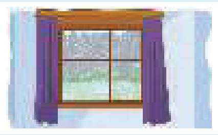

Learning Objectives
- Use for with a period of time (for two hours, for six months)
- Use since with the start of a period (since 8 o'clock, since April)
- Leave out for in positive sentences, but keep it in negative ones
- Choose between when … ? with the past simple and how long … ? with the present perfect
- Say It's … since … or It's been … since …
Part A — Theory
For and since: how long something has been happening

We use for and since to say how long something has been happening.
We've been waiting for two hours.
We've been waiting since 8 o'clock.
| Preposition | What follows | Example |
|---|---|---|
for | a period of time | Sally has been working here for six months. (not since six months) |
since | the start of a period | Sally has been working here since April. (= from April until now) |
We use for + a period of time:
Sally has been working here for six months. (not since six months)
I haven't seen Tom for three days.
We use since + the start of a period:
Sally has been working here since April. (= from April until now)
I haven't seen Tom since Monday.
Leaving out for — and when you need it
They've been married for ten years. or They've been married ten years.
They haven't had a holiday for ten years. (you need for)
You can use in instead of for in negative sentences (I haven't … etc.):
They haven't had a holiday in ten years. (= for ten years)
We do not use for + all … (all day / all my life etc.):
I've lived here all my life. (not for all my life)
When … ? (past simple) and how long … ? (present perfect)
a: When did it start raining?
b: It started raining an hour ago / at 1 o'clock.
a: How long has it been raining?
b: It's been raining for an hour / since 1 o'clock.
| Question | Answer about the time it started | Answer about the length of time |
|---|---|---|
| When did Joe and Kate first meet? | They first met a long time ago. / when they were at school. | — |
| How long have they known each other? | — | They've known each other for a long time. / since they were at school. |
It's … since …
We say:
| It's / It's been | Length of time | since … |
|---|---|---|
it's (= it is) or it's been (= it has been) | a long time / six months (etc.) | since something happened |
It's two years since I last saw Joe. or It's been two years since … (= I haven't seen Joe for two years)
It's ages since we went to the cinema. or It's been ages since … (= We haven't been to the cinema for ages)
How long is it since Mrs Hill died? or How long has it been since …? (= when did she die?)
How long have you (been) …? ➜ Unit 11
Part B — Exercises
Write for or since.
Item 1 is done for you. In items 2 and 3, for can also be left out.
- It's been raining lunchtime.
- Paul has lived in Brazil ten years.
- I'm tired of waiting. We've been sitting here an hour.
- Kevin has been looking for a job he left school.
- I haven't been to a party ages.
- I wonder where Joe is. I haven't seen him last week.
- Jane is away on holiday. She's been away Friday.
- The weather is dry. It hasn't rained a few weeks.
Look at each answer and choose the right question.
Item 1 is done for you — the correct question is shown in brackets. Choose one question for each answer.
- Ten years ago. (When did they get married? is correct)
- About five years.
- Only a few minutes.
- September.
- Last week.
- A long time.
Read the situations and complete the sentences.
Items 1 and 2 are done for you. Contractions like he's and full forms like he has are both accepted.
- It's raining. It's been raining since lunchtime. It at lunchtime.
- Ann and Jess are friends. They first met years ago. They've known each other years.
- Mark is unwell. He became ill on Sunday. since Sunday.
- Sarah is married. She's been married for a year. She a year ago.
- You have a headache. It started when you woke up. since I woke up.
- Sue is in a meeting at work. It's been going on since 9 o'clock. The meeting 9 o'clock.
- You're working in a hotel. You started working there six months ago. I've been for .
- Kate is learning Japanese. She's been doing this for a long time. Kate started .
Complete B's sentences.
Item 1 is done for you. Then write B's answers again in items 5–8, this time using It's … since …. Contractions like haven't and full forms like have not are both accepted.
- A: Do you often go on holiday? B: No, I five years.
- A: Have you seen Lisa recently? B: No, I about a month.
- A: Do you still go swimming regularly? B: No, I a long time.
- A: Do you still ride a bike these days? B: No, I ages.
Now write B's answers again. This time use It's … since … .
- (1) No, .
- (2) No, .
- (3) No, .
- (4) No, .
Answer Key
Exercise 12.1 — Write for or since
- It's been raining since lunchtime.
- Paul has lived in Brazil for ten years. (also correct without for)
- I'm tired of waiting. We've been sitting here for an hour. (also correct without for)
- Kevin has been looking for a job since he left school.
- I haven't been to a party for ages.
- I wonder where Joe is. I haven't seen him since last week.
- Jane is away on holiday. She's been away since Friday.
- The weather is dry. It hasn't rained for a few weeks.
Exercise 12.2 — Choose the right question
- Ten years ago. When did they get married?
- About five years. How long have you had this car?
- Only a few minutes. How long have you been waiting?
- September. When did your course start?
- Last week. When did Anna arrive in London?
- A long time. How long have you known each other?
Exercise 12.3 — Complete the sentences
- It's raining. It's been raining since lunchtime. It started raining at lunchtime.
- Ann and Jess are friends. They first met years ago. They've known each other for years.
- Mark is unwell. He became ill on Sunday. He has been ill / has been unwell since Sunday.
- Sarah is married. She's been married for a year. She got married a year ago.
- You have a headache. It started when you woke up. I've had a headache since I woke up.
- Sue is in a meeting at work. It's been going on since 9 o'clock. The meeting started / began at 9 o'clock.
- You're working in a hotel. You started working there six months ago. I've been working in a hotel / I've been working there for six months.
- Kate is learning Japanese. She's been doing this for a long time. Kate started learning Japanese a long time ago.
Exercise 12.4 — B's sentences
- A: Do you often go on holiday? B: No, I haven't had a holiday for five years.
- A: Have you seen Lisa recently? B: No, I haven't seen Lisa / haven't seen her for about a month.
- A: Do you still go swimming regularly? B: No, I haven't been swimming for a long time.
- A: Do you still ride a bike these days? B: No, I haven't ridden a bike for ages.
- (1) No, it's five years since I last had a holiday.
- (2) No, it's about a month since I (last) saw Lisa / her. or No, it's been about a month since …
- (3) No, it's a long time since I (last) went swimming. or No, it's been a long time since …
- (4) No, it's ages since I (last) rode a bike. or No, it's been ages since …
Summary
| Use | Example |
|---|---|
| for + a period of time | We've been waiting for two hours. |
| since + the start of a period | We've been waiting since 8 o'clock. |
| Leaving out for in positive sentences | They've been married ten years. |
| Keeping for in negative sentences | They haven't had a holiday for ten years. |
| Not using for + all … | I've lived here all my life. |
| when … ? + past simple | When did it start raining? It started raining an hour ago. |
| how long … ? + present perfect | How long has it been raining? It's been raining for an hour. |
| It's … since … | It's two years since I last saw Joe. |
| It's been … since … | It's been ages since we went to the cinema. |